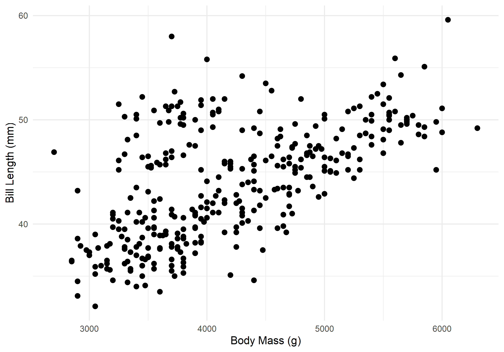
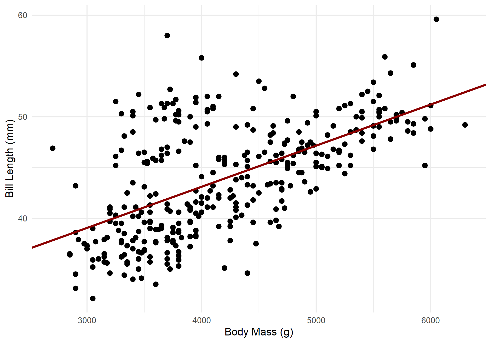
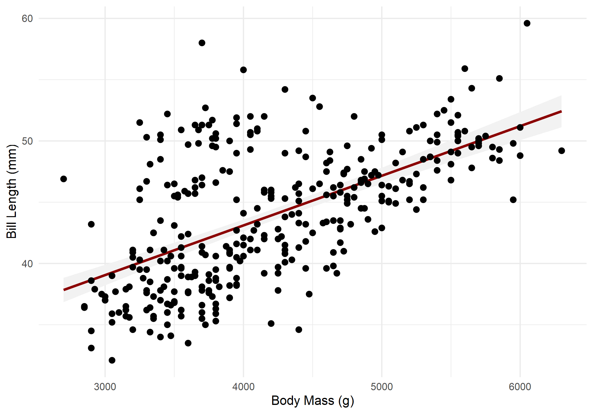
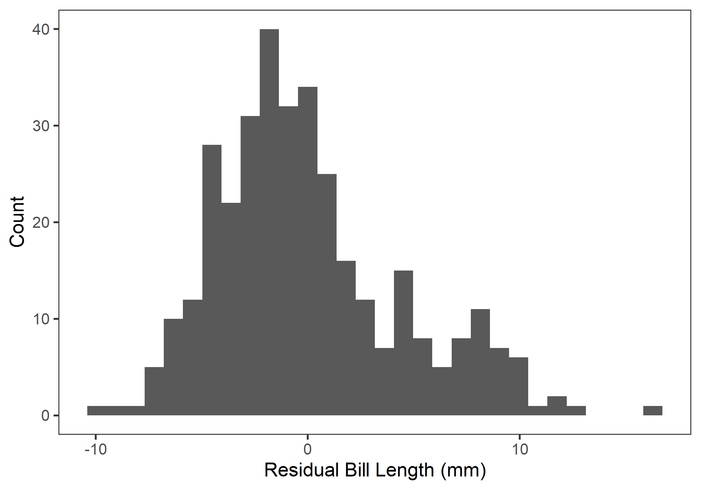
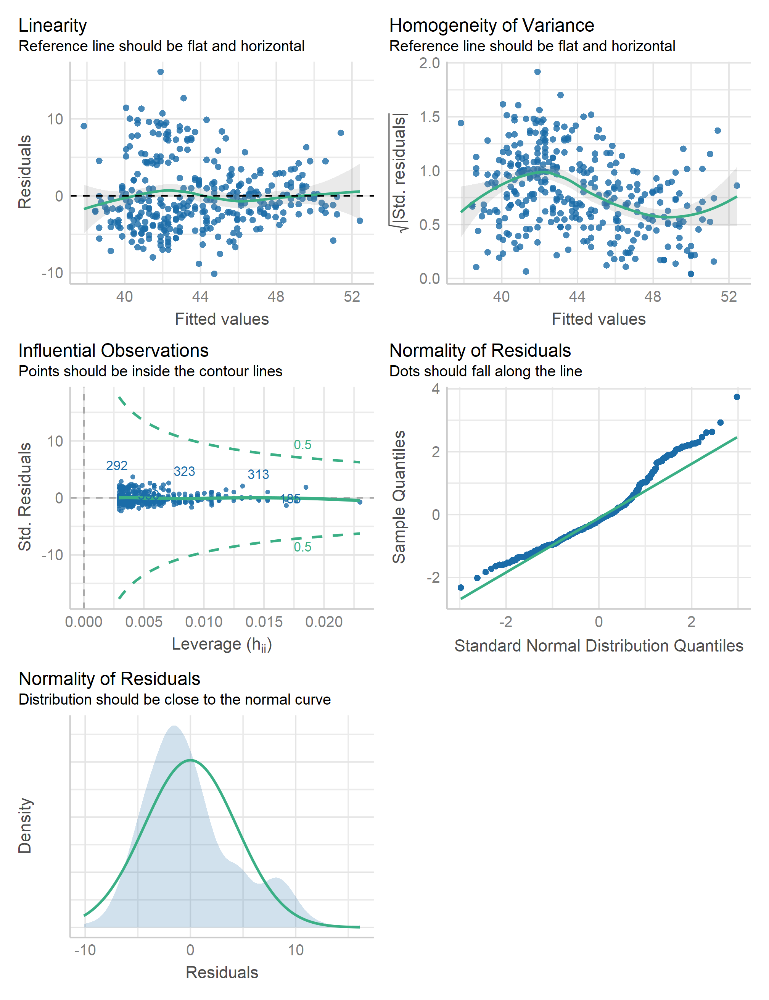

Lab 06
Diagnostic Plots
Outline
TL;DR linear models, prediction, and diagnostic plots.
Caution! Please note that all labs assume that you are working in an RStudio Project directory!
Objectives
This lab will guide you through the process of
- Predicting with a linear model
- Visualizing a linear model
- Prediction and Confidence intervals
- visualizing model assumptions
- histogram of residuals
- diagnostic plots with base
plot() - diagnostic plots with
check_model()
R Packages
We will be using the following packages:
To install these packages, run the following code in your console:
install.packages(
c("archdata", "dplyr", "ggplot2", "palmerpenguins", "performance", "tibble")
)Note: You should not install.packages() in an Rmd document. Use that function in your R console instead. Then use library() as part of the preamble in your Rmd document to check packages out of the library and use them in that R session. This should always go at the start of your document!
library(archdata)
library(dplyr)
library(ggplot2)
library(palmerpenguins)
library(performance)
library(tibble)Data
DartPoints- Includes measurements of 91 Archaic dart points recovered during surface surveys at Fort Hood, Texas.
- package:
archdata - reference: https://cran.r-project.org/web/packages/archdata/archdata.pdf
OxfordPots- Includes percentages of late Romano-British Oxford Pottery on 30 sites, along with their distance from Oxford.
- reference: https://cran.r-project.org/web/packages/archdata/archdata.pdf
penguins- Includes measurements for penguin species, island in Palmer Archipelago, size (flipper length, body mass, bill dimensions), and sex.
- package:
palmerpenguins - reference: https://allisonhorst.github.io/palmerpenguins/reference/penguins.html
Visualize Model
To aid in the interpretation of your model, it is useful to visualize the relationship or trend it suggests (if it does suggest one!). Before building that model, however, you should, as always, make sure to visualize your data!
# clean up data, remove rows with missing data
penguins <- filter(
penguins,
!is.na(body_mass_g), # !is.na(x) == exclude rows with NA values for x
!is.na(bill_length_mm)
)
ggplot(penguins, aes(body_mass_g, bill_length_mm)) +
geom_point(size = 2) +
theme_minimal() +
labs(
x = "Body Mass (g)",
y = "Bill Length (mm)"
)
What is the relationship here? Let’s see if a linear model can help us out.
penguins_model <- lm(bill_length_mm ~ body_mass_g, data = penguins)
summary(penguins_model)
##
## Call:
## lm(formula = bill_length_mm ~ body_mass_g, data = penguins)
##
## Residuals:
## Min 1Q Median 3Q Max
## -10.125 -3.043 -0.809 2.071 16.111
##
## Coefficients:
## Estimate Std. Error t value Pr(>|t|)
## (Intercept) 2.69e+01 1.27e+00 21.2 <2e-16 ***
## body_mass_g 4.05e-03 2.97e-04 13.6 <2e-16 ***
## ---
## Signif. codes: 0 '***' 0.001 '**' 0.01 '*' 0.05 '.' 0.1 ' ' 1
##
## Residual standard error: 4.39 on 340 degrees of freedom
## Multiple R-squared: 0.354, Adjusted R-squared: 0.352
## F-statistic: 186 on 1 and 340 DF, p-value: <2e-16There are two ways to visualize this model:
1. With abline. Use the estimated coefficients (the slope and intercept) to construct a formula that will calculate values of y across the range of x. The formula has the form: \(y \sim a + bx\), where is \(a\) is the intercept and \(b\) is the slope, hence abline. 2. With predict. Use the model to estimate values of \(y\) for specified values of \(x\) and construct a line from those values.
There’s actually a third much more direct way that ggplot() offers that uses geom_smooth(), but we’ll save that one for another time.
Anyway, let’s try an example of each, so you can get a feel for how to do this.
ABline
ggplot() has a geometry for this. As you might have guessed, it’s geom_abline(). All we need to do is extract the values of the coefficients from the model and feed these to the slope and intercept parameters, respectively. To do that, we will use the coefficients() function. This provides a named vector that we can use to get our estimates. Notice that we use <vector>[[<variable]] like we do with tables, only this time we are extracting a single value.
betas <- coefficients(penguins_model)
betas
## (Intercept) body_mass_g
## 26.89887 0.00405
intercept <- betas[["(Intercept)"]]
slope <- betas[["body_mass_g"]]Now, we can plot our model over the data. This is always useful, as you can see how the model compares to the actual observations.
ggplot(penguins, aes(body_mass_g, bill_length_mm)) +
geom_point(size = 2) +
theme_minimal() +
labs(
x = "Body Mass (g)",
y = "Bill Length (mm)"
) +
geom_abline(
slope = slope,
intercept = intercept,
color = "darkred",
size = 1 # increase line thickness to make it more visible
)
With this method, we simply supply the coefficients. ggplot() then uses those to estimate values of y for each value of x shown within the range of x shown in the plot. Notice that the line continues across the full range of the graph. This shows that the model assumes the relationship is linear, meaning in this case that it will always increase to the right (to infinity) and always decrease to the left (to negative infinity)
Predict
We can also generate values of y manually with the predict() function. The key here is to supply it with our model, which it will then use to make predictions.
estimates <- predict(penguins_model)
# add to the penguins table
penguins$estimates <- estimates
ggplot(penguins) +
geom_point(
aes(body_mass_g, bill_length_mm),
size = 2
) +
theme_minimal() +
labs(
x = "Body Mass (g)",
y = "Bill Length (mm)"
) +
geom_line(
aes(body_mass_g, estimates),
color = "darkred",
size = 1
)
This is very similar to our abline graph above. Note, however, that the trend line or modeled relationship does not extend across the entire graph, suggesting that this linear model is not continuous from negative to positive infinity, which is misleading. There are ways to correct for this in ggplot(). Unfortunately, they are beyond the scope of this lab.
In the meantime, note that you can use predict() to estimate the value of the response at specific values of the independent variable. To do that, you simply feed the predict() function, specifically its newdata parameter, a table with the values of the independent variable that interest you. For example, suppose you wanted to know what bill length this model would expect for a penguin having a body mass of, say, 4,500 grams. We can figure that out this way:
new_data <- tibble(
body_mass_g = 4500
)
predict(penguins_model, newdata = new_data)
## 1
## 45.1If you like, you can also do that for multiple values like so:
new_data <- tibble(
body_mass_g = c(3000, 4500)
)
predict(penguins_model, newdata = new_data)
## 1 2
## 39.1 45.1Intervals
You can use predict() to calculate the prediction interval for these estimates by specifying interval = "prediction". Note, too, that we ask it to provide that interval at level = 0.95 to ensure the prediction interval is estimated at the 95% tolerance level.
predict(
penguins_model,
newdata = new_data,
interval = "prediction",
level = 0.95
)
## fit lwr upr
## 1 39.1 30.4 47.7
## 2 45.1 36.5 53.8If we set interval = "confidence", we can get the standard errors instead.
predict(
penguins_model,
newdata = new_data,
interval = "confidence",
level = 0.95
)
## fit lwr upr
## 1 39.1 38.2 39.9
## 2 45.1 44.6 45.6Here, the prediction interval refers to uncertainty around the expected value, and the confidence interval refers to uncertainty around the estimated coefficients.
We can actually add these to our model using the function geom_ribbon() like so.
confidence <- predict(
penguins_model,
interval = "confidence",
level = 0.95
)
# coerce to a table
confidence <- as_tibble(confidence)
confidence$body_mass_g <- penguins$body_mass_g
ggplot() +
geom_ribbon(
data = confidence,
aes(x = body_mass_g, ymin = lwr, ymax = upr),
fill = "gray95"
) +
geom_line(
data = confidence,
aes(body_mass_g, fit),
color = "darkred",
size = 1
) +
geom_point(
data = penguins,
aes(body_mass_g, bill_length_mm),
size = 2
) +
theme_minimal() +
labs(
x = "Body Mass (g)",
y = "Bill Length (mm)"
)
The ribbon geometry is, in effect, a polygon defined by an upper and lower line (ymax and ymin, respectively).
Exercises
- Build a model of penguin flipper length by body mass.
- Make sure to visualize your data first! Make a scatter plot!
- Now plot the modeled relationship between flipper length and body mass.
- Use
coefficients()andgeom_abline(). - Use
predict()andgeom_line(). - Add the confidence interval to the second plot using
geom_ribbon().
- Use
Visualize Assumptions
Whenever you build a model, it is critically important to visualize the model and its assumptions as this will give you some indication about whether those assumptions have been met. Here, we’ll visualize our penguins model, starting with the residuals.
Residuals
One important assumption of OLS regression is that the errors are normally distributed. A simple histogram of the residuals will give us some indication of that. To get the residuals in our model, we can use the residuals() function.
penguin_residuals <- residuals(penguins_model)
penguin_fit <- tibble(
residuals = penguin_residuals
)
ggplot(penguin_fit, aes(residuals)) +
geom_histogram() +
labs(
x = "Residual Bill Length (mm)",
y = "Count"
)
Do these look normally distributed to you? Do they have the approximate shape of a bell curve? If a visual check does not suffice, you can always try a Shapiro-Wilk test for normality. To do that in R, you can use the shapiro.test() function. Note that the null hypothesis for this test is that the variable is not normally distributed.
shapiro.test(penguin_residuals)
##
## Shapiro-Wilk normality test
##
## data: penguin_residuals
## W = 1, p-value = 8e-09Diagnostic Plots
Base R provides a really useful plot() method for linear models. You just feed this function your linear model and tell it which kind of plot you want to make. Here is a list of options, which you can supply to the which parameter:
- Residuals vs Fitted plot
- Normal Q-Q
- Scale-Location
- Cook’s Distance
- Residuals vs Leverage
- Cook’s Distance vs Leverage
Here is an example of the Q-Q Plot for our penguins model.
plot(penguins_model, which = 2)
The plot() function in this case is extremely utilitarian. If you just want a quick visual diagnostic for your own edification, I recommend using this. However, if you want to present all these plots together in a clean way that easily communicates the assumptions being tested by each, I recommend using the check_model() function from the performance package.
check_model(penguins_model)
With this, we can hazard all the following conclusions:
- The relationship is linear.
- The model departs from homoscedasticity, but only slightly.
- No observations have an undue influence on the model.
- The residuals are more or less normally distributed.
Note that none of the assumptions are met perfectly. This will never be the case, not with real world data. It should also clue you in to the fact that model evaluation is never certain. It always involves some risks that you might be wrong about your model.
Exercises
- Extract the residuals from your model of flipper length by body mass and visualize their distribution with a histogram.
- Do the residuals look normally distributed?
- Use the Shapiro Wilk test to verify this.
- Explore the model with base
plot(). - Now, use
check_model().- What do these plots tell you about the model?
Homework
- Load the following datasets from the
archdatapackage usingdata().DartPointsOxfordPots
- Using the
DartPointsdataset, build a linear model showing the relationship (if any) between the length and width of dart points. Be sure to do all of the following:- Visualize the data with a scatter plot!
- Use
summary()to report the model. - Use
coefficients()andgeom_abline()to visualize the modeled relationship. Be sure to plot this over the data! - Use
check_model()to visually inspect the model. - Does the model satisfy the assumptions of linear regression?
- Using the
OxfordPotsdataset, build a linear model showing the relationship (if any) between the percentage of Oxford Pots found on an archaeological site and the distance of that site from the city of Oxford. Be sure to do all of the following:- Visualize the data with a scatter plot!
- Use
summary()to report the model. - Use
predict()andgeom_line()to visualize the modeled relationship. Be sure to plot this over the data! - Add a confidence interval with
geom_ribbon(). - Use
check_model()to visually inspect the model. - Does the model satisfy the assumptions of linear regression?